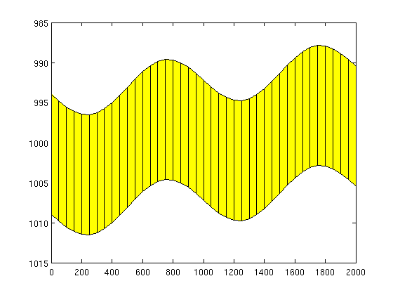
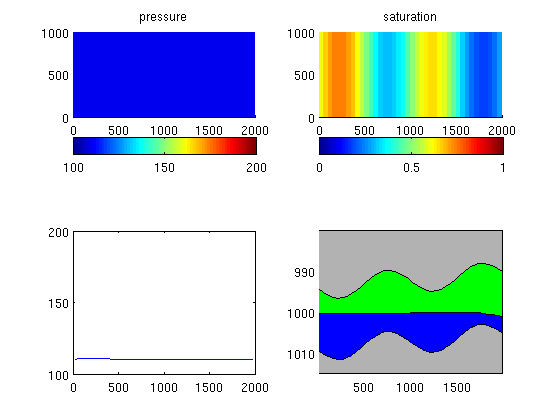

Contents
VE simulation in a standard black-oil solver
In this example we show how to set up a standard format black-oil model that can be used to simulate a VE model. For the actual simulation, we use the fully-implicit solver in MRST from the 'ad-fi' module, which is based on automatic differentiation.
try require deckformat ad-fi catch %#ok<CTCH> mrstModule add deckformat ad-fi end
Parameters for the simulation
gravity on [nx,ny,nz] = deal(40, 1, 1); % Cells in Cartsian grid [Lx,Ly,H] = deal(2000,1000,15); % Physical dimensions of reservoir total_time = 5*year; % Total simulation time nsteps = 10; % Number of time steps in simulation dt = total_time/nsteps; % Time step length perm = 100; % Permeability in milli darcies phi = 0.1; % Porosity depth = 1000; % Initial depth ipress = 200; % Initial pressure
Create input deck and construct grid
Create an input deck that can be used together with the fully-implicit solver from the 'ad-fi' module. Since the grid is constructed as part of setting up the input deck, we obtain it directly.
[deck, G] = sinusDeckAdi([nx ny nz], [Lx Ly H], nsteps, dt, ... -.1*pi/180, depth, phi, perm, ... (H*phi*Lx*Ly)*0.2*day/year, ipress); % Alternatively, we could read deck from file and construct the grid % deck = readEclipseDeck( ... % fullfile(VEROOTDIR,'data','decks','sinusDeckAdi.DATA'); % G = initEclipseGrid(deck); figure, plotGrid(G),view([0 -1 0]), box on
Initialize data structures
First, we convert the input deck to SI units, which is the unit system used by MRST. Second, we initialize the rock parameters from the deck; the resulting data structure may have to be post-processed to remove inactive cells. Then we set up the fluid object and tell the ad-fi solver that that we are working with an oil-water system.
deck = convertDeckUnits(deck);
rock = initEclipseRock(deck);
rock = compressRock(rock, G.cells.indexMap);
fluid = initDeckADIFluid(deck);
systemOW = initADISystem({'Oil', 'Water'}, G, rock, fluid);
Run the schedule setup in the file
Before we can run the schedule, we make sure that we have an initial hydrostatic pressure distribution. Then we pick the schedule from the input deck and start the simulator.
x0 = initEclipseState(G, deck, initEclipseFluid(deck)); z = G.cells.centroids(:,3); x0.pressure = ipress*barsa +(z(:)-z(end))*norm(gravity)*deck.PROPS.DENSITY(2); [wellSols, states] = runScheduleADI(x0, G, rock, systemOW, deck.SCHEDULE);
Warning: Non-linear solver did not converge, stopped by max iterations... Step 1 of 20 (Used 25 iterations) Step 2 of 20 (Used 10 iterations) Step 3 of 20 (Used 4 iterations) Step 4 of 20 (Used 4 iterations) Step 5 of 20 (Used 4 iterations) Step 6 of 20 (Used 4 iterations) Step 7 of 20 (Used 3 iterations) Step 8 of 20 (Used 3 iterations) Step 9 of 20 (Used 3 iterations) Step 10 of 20 (Used 3 iterations) Warning: Injector 'I01' shut on input. Ignored. Warning: Number of wells has changed, wellsol field should be updated based on well-name matching Step 11 of 20 (Used 7 iterations) Step 12 of 20 (Used 4 iterations) Step 13 of 20 (Used 3 iterations) Step 14 of 20 (Used 3 iterations) Step 15 of 20 (Used 3 iterations) Step 16 of 20 (Used 3 iterations) Step 17 of 20 (Used 3 iterations) Step 18 of 20 (Used 3 iterations) Step 19 of 20 (Used 3 iterations) Step 20 of 20 (Used 3 iterations)
Plot results
%figure Gt = topSurfaceGrid(G); xc = Gt.cells.centroids(:,1); zt = Gt.cells.z; zb = zt + Gt.cells.H; for nn=1:numel(states) clf state=states{nn}; subplot(2,2,1),cla title('pressure') plotCellData(G,state.pressure/barsa);colorbar('horiz'), caxis([100 200]) subplot(2,2,2),cla title('saturation') plotCellData(G,state.s(:,1));colorbar('horiz'), caxis([0 1]) % plot as VE subplot(2,2,3),cla plot(xc,state.pressure/barsa); set(gca,'YLim',[100 200]); subplot(2,2,4),cla,hold on patch(xc([1 1:end end]), [zt(end)-10; zt; zt(end)-10],.7*[1 1 1]); patch(xc([1 1:end end]), [zb(end)+10; zb; zb(end)+10],.7*[1 1 1]); patch(xc([1:end end:-1:1]), ... [zt + Gt.cells.H.*state.s(:,2); zt(end:-1:1)], 'g') patch(xc([1:end end:-1:1]), ... [zt + Gt.cells.H.*state.s(:,2); zb(end:-1:1)], 'b') set(gca,'YDir','reverse'), axis tight drawnow; pause(0.01) end